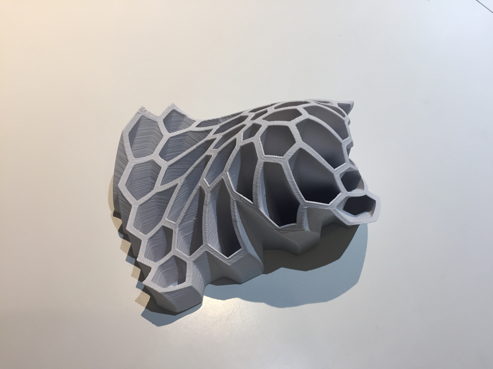

I just set foot in TJHSST for the last time in probably a long while. The All Night Graduation Party was held there, and I went, despite not staying up all night. (That’s also why I missed yesterday’s post). I had a great time, but my friend William had a good observation: despite all the wild revelry we had been having, everything was tinged by remorse and nostalgia and wandering thoughts about what had been.
I would’ve liked another “last time,” and will probably count the final time I stepped foot in the Electronics Lab and talked to Mr. Bell as my final moment in TJHSST. Gosh darn was that also sad, me and Alexander had to fight back choked throats and blink away the starts of tears as we left the wonderful room filled to the brim with any imaginable breadboard component, where so many memories of true freedom reigned, the place anyone could unequivocally point to and say, “this opportunity is what’s so special about TJHSST.” Reliving the experience is hard.
HOLY COW I ACTUALLY TOOK A PICTURE OF THE 3D THINGY FINALLY here it is:
